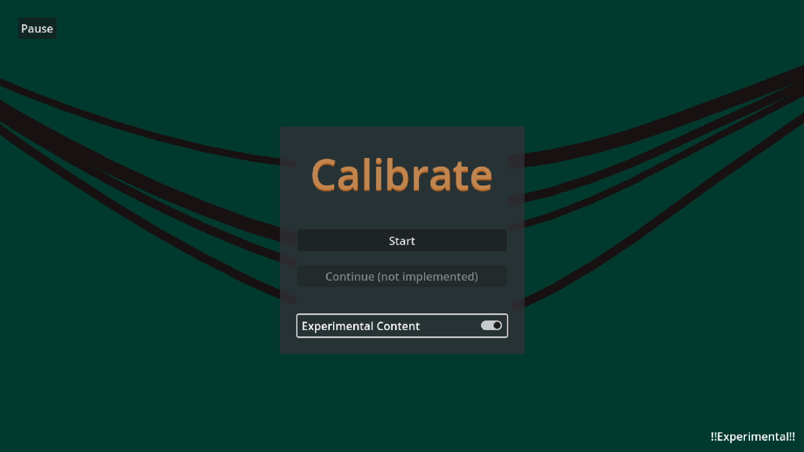
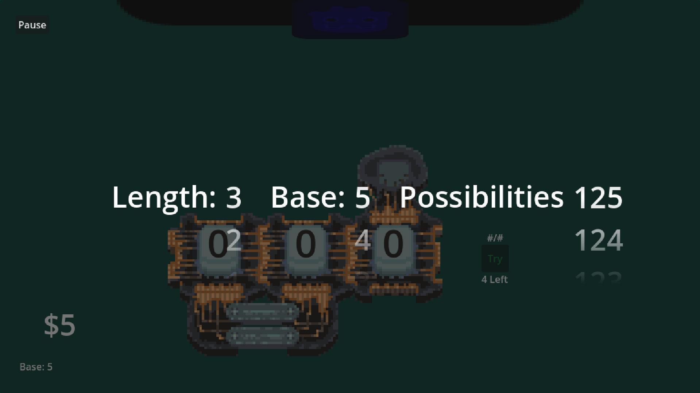
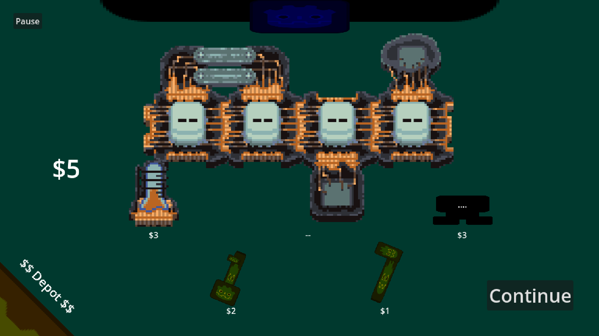

Calibrate has and continues to be a long term project of mine. I have presented it across various game expos and showcases and aspire an eventual steam release. Due to popular demand, it currently has a WIP demo available on itch.io.
Calibrate is a combination code cracking strategy roguelike. In place of your typical deck-builder, you fine tune the device. See if you are able to tweak the odds in your favor through logical deduction as the difficult scales exponentially in the most literal sense.
Calibrate is a solo project. All art, audio, programming, and design are my own.
Playesting has been a crucial factor in the design. The project began as a paper prototype which underwent heavy testing! As such, special thanks to all who have contributed their feedback.


